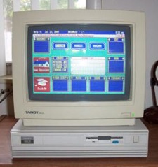
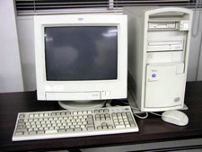

About Me
tl;dr
I started off with website development in 1997 when I was living up in the Northeast Kingdom in VT. There was literally nothing for teens to do in the area so I found a community center called the St. Johnsbury ECC (Expanding the Caring Community). I volunteered there as a site monitor for a few years and dabbled with ASP creating a website for the ECC. I made the switch to PHP shortly thereafter and have been using PHP ever since. I worked for both small companies and large corporations and have worked in the office and at positions which were 100% remote. More recently I have been working with Ruby and Jekyll to create a static version of this blog.
The Longer Detailed Version
In 1993 I really wanted a computer but at the time we could not afford one as they were very expensive. I had a 50cc 4 wheeler that my father had bought me when I was 5 and after riding it for 10 years I opted to sell it and buy my first computer. I sold the 4 wheeler for $750 and went out and bought a used computer that I had found. It was a Tandy 1000RL and it was being sold for exactly $750. I bought the machine and immediately took it home to set it up. This is when I really started to learn about computers. The computer had no internal storage everything was loaded from 3.5" floppy disks. To play hangman I think I had to load 3-4 disks and it would load the game into ram so that I could play it. I started to look at programming at this time so that I could make games but I didn't have the dedication to follow-through with any of it. I used this computer for about a two years but I think my mom could see that it just wasn't enough for me. I was very limited with what I could do with the machine.
In 1995 my mother bought me my first real computer for christmas. I am not quite sure how she pulled it off as I know it cost somewhere around $2,000. I know that it was an IBM Aptiva but I am not certain of the model number anymore. I know that it looked exactly like the image to the left and I know that it was a top of the line computer for the time. I thought this computer was perfect it was exactly what I had wanted for a long time. It ran Windows 95 which is something my old Tandy could not do so I was excited. I started to play around with Windows and get the lay of the land. I had also noticed that the computer had come with some home automation software, this is where my tinkering began. The home automation kit had 2 modules that you could plug into a power outlet and then plug appliances into them. They were controlled by the software on the computer so I started to set a lamp in my bedroom to turn on and off at different intervals. While I was intrigued by the home automation the components were very expensive and I didn't want to ask my mother to buy more on top of what she had already given me. I stopped toying with that and started to use the computer to play games all the time and my learning came to a halt.
Back in 1996 when I was attending Burr & Burton Seminary (now Academy) my math teacher Jozef Hand-Boniakowski had briefly mentioned that I should take a look at HTML. I knew that this is what was used to create websites at the time but I really wasn't in the mood to pursue such a venture. It was not until 1997 when I moved to the Northeast Kingdom in VT that I became so utterly bored that I started to view the source of web pages. Once I started to look at the markup I was hooked and sat there for 3 days without sleeping just looking through source and seeing what I could make. I didn't make anything worthwhile at the time it was purely a learning exercise.
Living in the middle of nowhere with nothing to do made life really boring, I started to see what was around the town that I could do. I had found a local community center called the St. Johnsbury ECC. It was in the basement of the town's recreation hall. The first time I went down there I saw a long empty room with 1 desk in it. Behind the desk sat a man who was working on a computer, as soon as I walked in he was ready to hop up from the desk and give me his computer to use. My first impression of this man was for lack of a better word "hippy". He seemed really laid back and chill and as I talked to him I found that he was a really nice and likable guy. I asked what the center was all about and he basically descrilbed like this.
Well right now it's just me, but I have a mission to turn this into a community driven center where anyone can come use a computer to do school work, resumes, play games, etc. But the real work has to be done before people are playing games.
There were a few computers in the back room but they needed to be pieced together. They also started to have computers donated to the center by businesses around the community. I signed on to be a site monitor which consisted of the following
- Diagnosing and fixing hardware and software issues
- Helping teach visitors how to use certain programs, assist with ms office help
- Working on the centers website
I started to go to the center every day after school to helpout, during the slow times I would use the computers myself and started to play around with ASP 3.0 on a windows machine. I liked it... or thought I liked it anyway. A friend told me to check out PHP so I started to use it but I didn't start to use it heavilly until PHP 4 was released. When it finally came time for me to leave the center (I relocated to southern vermont) they had about 30 computer with a fiber internet connection. We were holding yearly new years parties where anyone could come watch the ball drop on a large projector screen. It is safe to say that the site expanded and did so quickly over the 2 years that I was there, I am really not sure if I would be doing web development as a career if it were not for having the center. More recently I heard they just shut the place down which really is a shame, I can name about 4 people who have solid careers today because they had the center to go to. It really sadens that they had to shut it down.
Between 1999 and 2002 I invested heavilly in books, read everything I could online and learned by creating personal projects in my free time. Once I felt I had knowledge enough I started to do freelance work on the side for extra money. I started to get so much freelence work that I was running myself into the ground as I was also working a full-time job. I decided to take on web development full-time and was loving the flexibility and the pay, it was better than any other job I had ever had.
In 2005 I felt it was time to register as a company and created Codebowl Solutions. Once I was registered as a company and ran advertising work started coming in quick and there was a lot coming in. I ended up having 5 developers working as contractors for my company at the peak. It was during this time that I had my Windows computer crash and I lost 3 days worth of work. I decided that I was going to go buy a Mac though I hadn't used one since OS 8, I heard they just worked and heard that OS X was based on UNIX and I knew that had been deemed more stable than Windows XP. I went out and bought a Mac Pro and still use it to this day. I know I will have to buy another one real soon but to me that is a long lasting investment. It's the first computer I have had for more than 3 years.
Anyway one of the companies clients was LicketyShip which was a same day delivery service provider in California. It was a start-up and was trying to bring development on-shore, 3 of the developers contracting for Codebowl Solutions and myself were working on the project. One day the CEO of LicketyShip approached me about coming on board full-time for the company as the development costs for 4 developers was rapidly eating the budget. I gave it some thought because I knew it would mean closing my company, there would be no way I could manage both at the same time. I decided to accept the position and started to pass my clients to companies I had worked with through the years (and trusted).
Since that time I have had some great opportunities to work with some really amazing people at really interesting companies. I have learned a lot through working on many different projects however I have always been a bit discouraged that I had not ventured far away from PHP. I have a family so the personal time that I do have I like to spend with them and I could never find an employer who would train me on the language they were using. More recently I started to re-think things and have really started to learn a lot about Ruby and Jekyll to create this site. I have had to learn quickly by viewing the source and to my surprise and relief Ruby is actually very easy to read.
Over the last 5 years I was living in Lynn, MA and working for several companies in the Greater Boston area. Some of the companies were Nokia, GSN (Game Show Network), Namespace, and Dailybreak.
At the current time I am living in Adams, MA and currently working for Acronym Media.